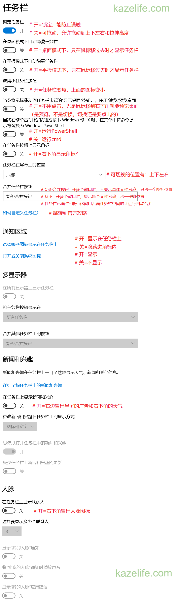

自定义Win10任务栏
发布日期：
最后更新：
【一图流】
【文字版】
1. 任务栏设置在哪
- 右键任务栏→任务栏设置
- 找不到任务栏时，可用以下方式进入：
Win+I→个性化→任务栏
2. 锁定任务栏
- 开=锁定，能防止误触
- 关=可拖动，允许拖动到上下左右和拉伸高度
3. 在桌面模式下自动隐藏任务栏
- 开=桌面模式下，只在鼠标移过去时才显示任务栏
4. 在平板模式下自动隐藏任务栏
- 开=平板模式下，只在鼠标移过去时才显示任务栏
※怎么确认自己是桌面模式还是平板模式？
方法1：
不支持触控的电脑默认为桌面模式
方法2：
Win+I→系统→平板电脑→更改其他平板设置
可以在这查看电脑是否支持触控
5. 使用小任务栏按钮
- 开=任务栏变矮，上面的图标变小
6. 当你将鼠标移动到任务栏未端的"显示桌面"按钮时，使用"速览"预览桌面
- 开=不用点击，光是鼠标移到右下角就能预览桌面
是预览，不是切换，切换还是要点击的。
7. 当我右键单击"开始"按钮或按下 Windows 键+X 时，在菜单中将命令提示符替换为 Windows PowerShell
- 开="开始"右键/Win+X→"命令提示符"和"命令提示符(管理员)"→打开的是PowerShell
- 关="开始"右键/Win+X→"命令提示符"和"命令提示符(管理员)"→打开的是cmd
※在哪里设置这种情况下打开的PowerShell的路径？
可查看文章【怎么更改通过Win+X运行的PowerShell的路径？】
8. 在任务栏按钮上显示角标
- 开=右下角显示角标^
（试了下关也能显示，没搞懂）
9. 任务栏在屏幕上的位置
- 可切换的位置有：上下左右
10. 合并任务栏按钮
- 始终合并按钮=开多个窗口时，不显示具体文件名称，只占一个图标位置
- 从不=开多个窗口时，显示每个文件名称，占一长排位置
- 任务栏已满时=最小化窗口占满任务栏空间时才进行自动合并
11. 如何自定义任务栏?
- 跳转到官方攻略
12. 选择哪些图标显示在任务栏上
- 开=显示在任务栏上
(不仅是系统图标，也包括"最小化到托盘"的第三方应用) - 关=隐藏进角标内
(并不会不显示，想要不显示需要在"13. 打开或关闭系统图标"中设置)
※也可直接上下拖动图标来控制隐藏还是显示。
13. 打开或关闭系统图标
- 开=显示
- 关=不显示
14. 在任务栏上显示新闻和兴趣
- 开=右边冒出半屏的广告和右下角的天气
15. 在任务栏上显示联系人
- 开=右下角冒出的人脉图标